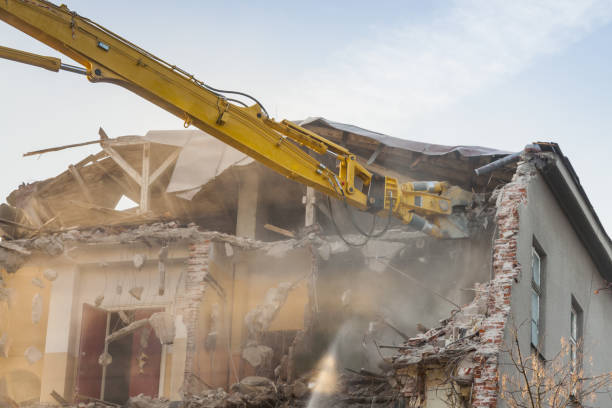

Destrozamos tu hogar
¿Por qué romperlo todo?
Reforma total de tu casa. Lo rompemos todo fácil y rápido. Garantia de insatisfacción
¡Bienvenidos a DestrozaHogar, la empresa de reformas más peculiar y desastrosa del mercado! Estamos aquí para llevar tus sueños de tener una casa impecable y ordenada al extremo. Nuestro lema es simple: "Destrozamos tu casa fácil y rápido". ¿Quién necesita una casa perfecta cuando puedes tener una caótica y llena de sorpresas?
En DestrozaHogar, nos enorgullece ofrecerte una garantía de insatisfacción total. Nos aseguramos de que cada proyecto de reforma sea una experiencia memorable, ¡pero no precisamente por la calidad del trabajo! Nuestro equipo de profesionales altamente inexpertos se esfuerza por dejar su huella única en cada rincón de tu hogar.
¿Quieres un baño que parezca un campo de batalla? ¿Una cocina que desafíe las leyes de la lógica y la funcionalidad? ¿Un jardín que parezca haber sido atacado por un tornado? ¡No busques más! DestrozaHogar es la solución perfecta para aquellos que buscan una reforma que desafíe todas las expectativas de buen gusto y cordura.